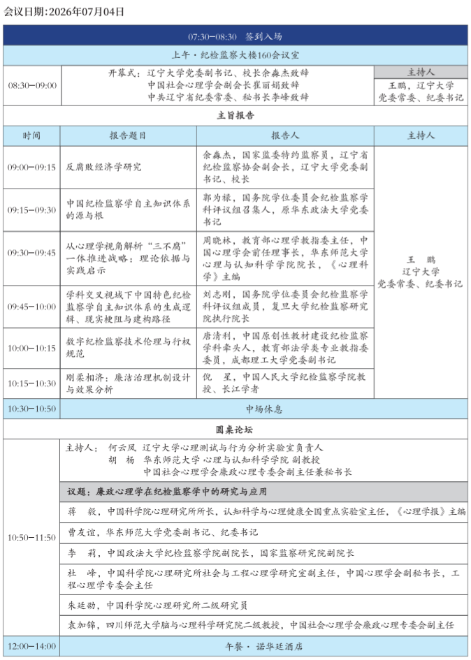
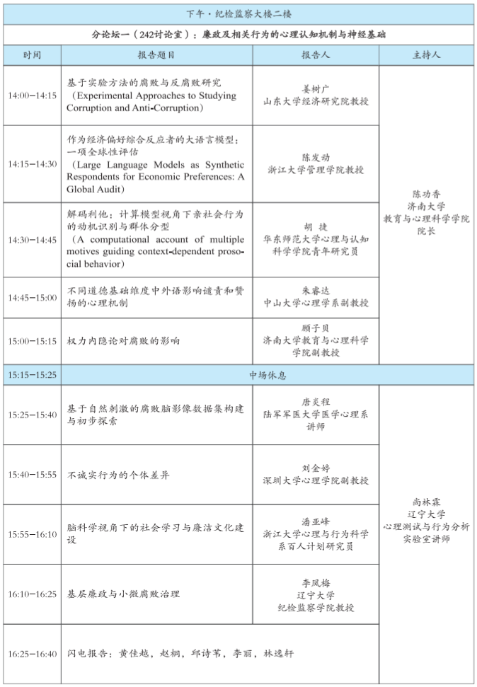
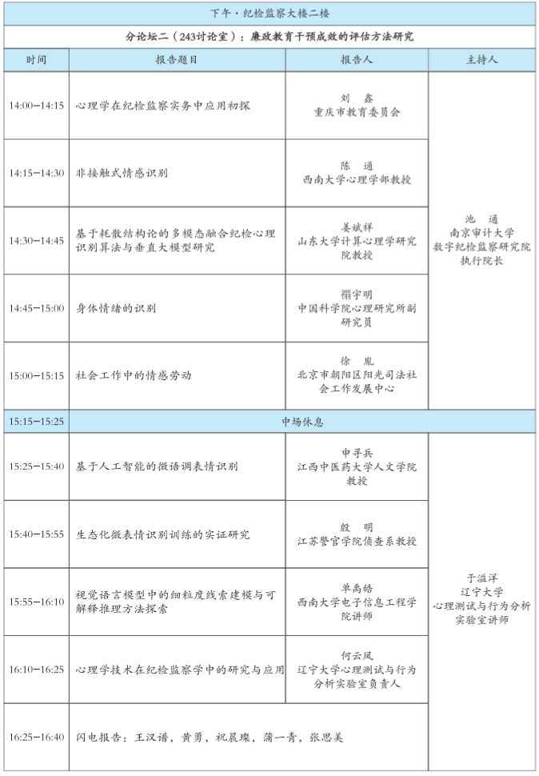
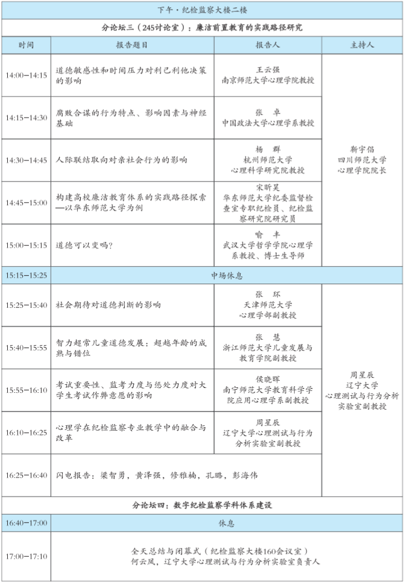

主旨报告
心理学与纪检监察学
About
中国社会心理学会廉政心理学研究专委会简介 中国社会心理学会廉政心理研究专业委员会(后简称专委会)于2025年1月获中国社会心理学会常务理事会批准筹建，由全国28家高校及科研院所的38名专家组成，是我国首个聚焦廉政心理的学术共同体。专委会旨在从心理认知层面探究腐败行为规律，理解“不想腐”的内在机制，服务党和国家需求。专委会主任现为我国知名社会心理学家、华东师范大学心理与认知科学学院崔丽娟教授，秘书处设于华东师范大学心理与认知科学学院。 专委会主要任务包括:搭建跨学科研究平台，促进心理学与纪检监察学等多领域合作;对接纪委监委开展应用研究，构建公务员廉政心理人格数据库，为选才和防腐提供科学依据;以内参专报形式转化成果，服务政府决策;开展国际比较研究，宣介中国反腐经验;开展面向不同对象的廉政教育与廉政心理科普活动，助力廉洁文化建设;推动高校开设相关课程及教材编写，培养复合型、创新型专门人才，为领域发展提供智力支撑。
辽宁大学简介 辽宁大学是一所具备文、史、哲、经、管、法、理、工、医、艺等学科门类的综合性大学，是国家“211工程”重点建设院校和国家“双一流”建设高校，入选教育部基础学科系列“101计划”。学校现有三个校区，即沈阳崇山校区、沈阳蒲河校区和辽阳武圣校区。学校占地面积2222亩，校舍建筑面积73万平方米。 辽宁大学源起于1948年11月东北人民政府在沈阳建立的商业专门学校，是中国共产党创建的第一所专门商科高校。1953年，东北商业专科学校合入东北财经学院。1958年，东北财经学院、沈阳师范学院的部分科系与沈阳俄文专科学校合并，组建成辽宁大学，朱德同志亲笔题写了校名。 学校现有各类在校学生36351人，其中本科生20732人，硕士研究生7645人，博士研究生1197人，留学生312人，成人教育学生6465人。现有教职工2714人，其中教学科研人员1837人。有博士生导师287人，硕士生导师1025人。有中国工程院院士1人，英国皇家经济学会终身院士1人，国际经济学会会士1人，国际计量经济学会会士1人，全英/全欧中国经济学会会士1人，国家杰出青年基金获得者2人，国家优秀青年基金获得者1人，国家级人才项目入选者44人次，国家级青年人才项目入选者11人次，享受国务院政府特殊津贴专家22人，教育部新世纪优秀人才12人，辽宁省“兴辽英才计划”入选者92人次，国家级和省级黄大年式教师团队4个。 学校有在招本科专业69个，一级学科硕士学位授权点32个，专业硕士学位授权点31个;有应用经济学、理论经济学、工商管理学、中国语言文学、哲学、法学、化学、统计学、中国史、物理学、环境科学与工程、马克思主义理论和软件工程一级学科博士学位授权点13个;有法律专业博士学位授权点;有应用经济学、理论经济学、统计学、工商管理学、法学、马克思主义理论、中国语言文学、哲学博士后科研流动站8个。应用经济学入选国家“双一流”建设学科名单，应用经济学、法学、马克思主义理论、工商管理学、理论经济学、统计学、环境科学与工程7个一级学科入选辽宁省“双一流”建设学科。 学校“经济学拔尖学生培养基地”入选国家基础学科拔尖学生培养计划2.0基地，马克思主义学院入选全国重点马克思主义学院。是国家经济学基础人才培养基地、国家卓越法律人才教育培养基地、高校辅导员培训与研修基地、国家级深化创新创业教育改革示范高校。有1个国家级实验教学示范中心，1个部委级重点实验室，76个省级重点研究基地、研究中心、智库、实验室等科研平台。设有图书馆、校史馆、档案馆、历史博物馆、自然博物馆。建有中外合作办学机构2个，设有联合国地球宪章教育中心，与37个国家的176所高等院校和研究机构建立了长期稳定的合作关系，分别与俄罗斯伊尔库茨克国立大学、塞内加尔达喀尔大学共建孔子学院。
辽宁心理测试与行为分析重点实验室简介 （辽宁大学心理测试与行为分析实验室） 2022年7月，辽宁省纪委监委、大连市纪委监委和辽宁大学三方共同创建辽宁省心理测试与行为分析重点实验室。该实验室是全国最早、东北唯一的一所将心理测试与行为分析技术应用在纪检监察领域的省级重点实验室(正处级建制)。实验室为实体科研机构，拥有近红外实验室、脑电实验室、热成像实验室、电刺激实验室、眼动实验室等多个现代化实验空间，配备深层语音情感分析、多模态情感分析、多导生理仪等先进设备，全面支撑纪检监察实战需求。实验室由中国科学院院士、北京大学原校长王恩哥担任学术委员会主任，由中国工程院院士记潘一山担任实验室主任，拥有四十余人的专兼职科研团队。2022年至今，已在Cognition、 NeuroImage、Journal of ExperimentalPsychology:General等顶级期刊发表多篇学术论文。 自成立以来，实验室获批辽宁省科技厅两项重大科技计划项目--“辽宁省心理测试与行为分析实验室能力建设”(500万元)、“多模态异常心理分析与行为监测研究”(500万元)，研发多款纪检监察科技装备，并辽宁省内纪委监委系统取得3项示范应用证明，获得纪委监委系统的高度认可。目前，实验室相关工作受到中央纪委信息中心的关注与指导
Program
心理学与纪检监察学
心理学与纪检监察学跨学科交流与应用
廉政及相关行为的心理认知机制与神经基础
廉政教育干预成效的评估方法研究
廉洁前置教育的实践路径研究
数字纪检监察学科体系建设（省纪委监委系统内部会议）
Speakers




Venue


Registration
本次会议免注册费，食宿自理。报名注册已截止。
描述原因请输入您的姓名及工作单位
会议不开放投稿
Contact